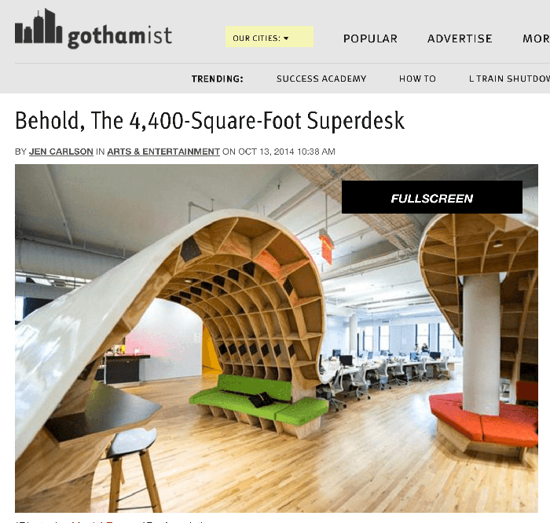
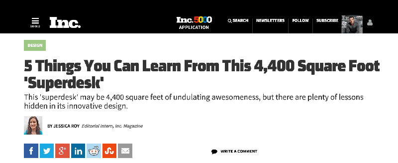
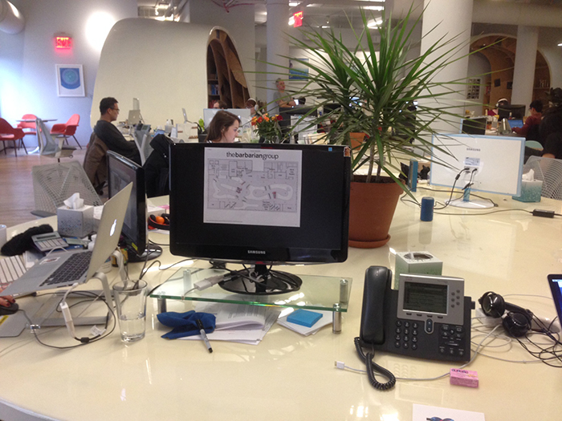
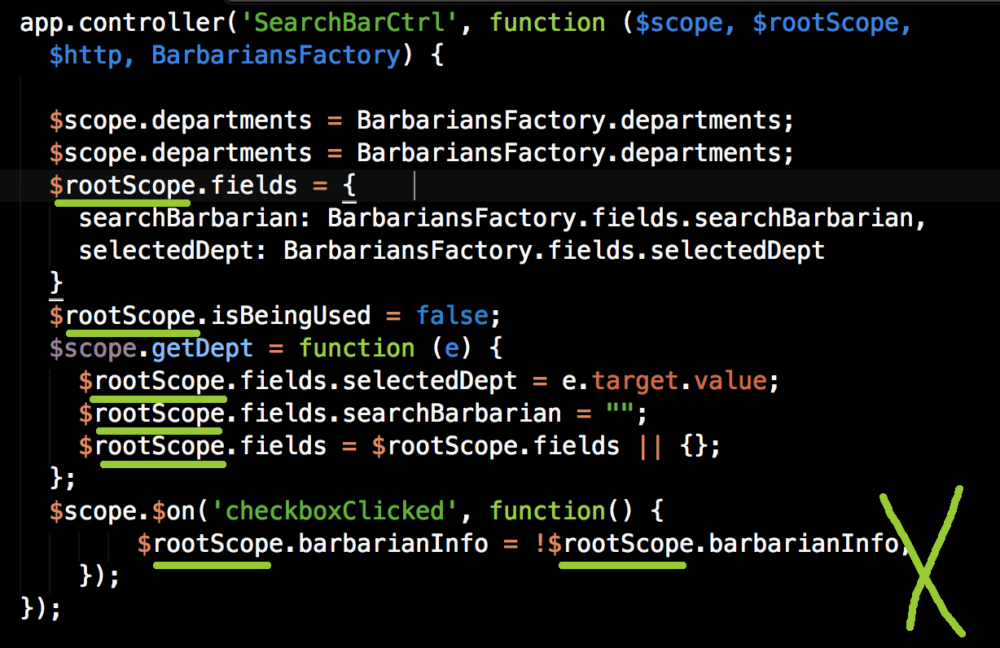
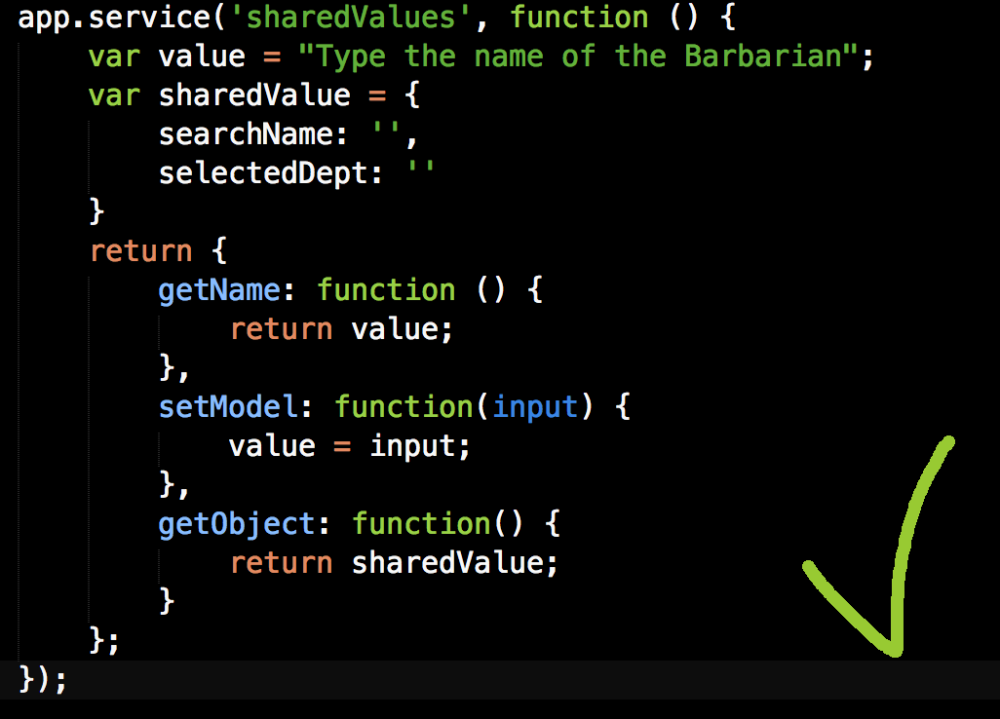
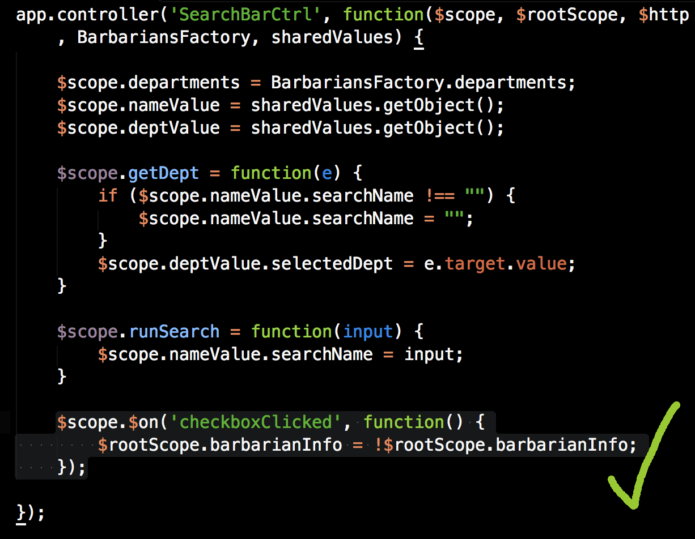
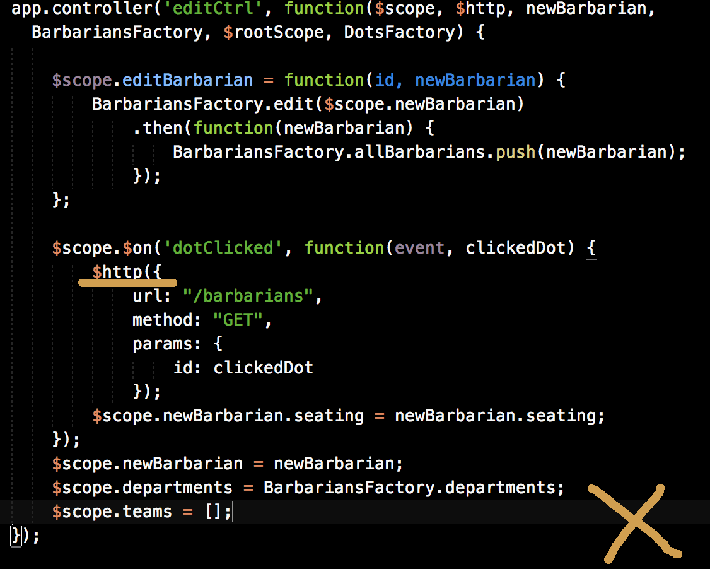
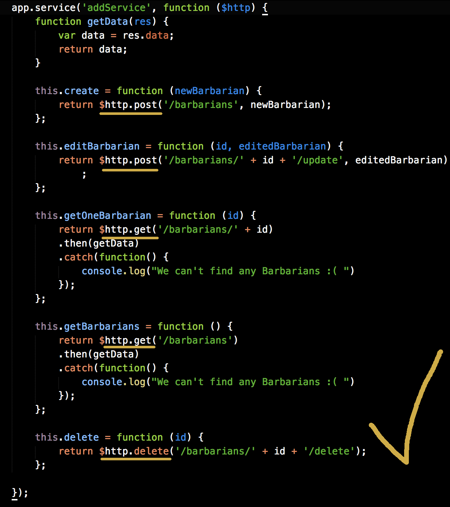
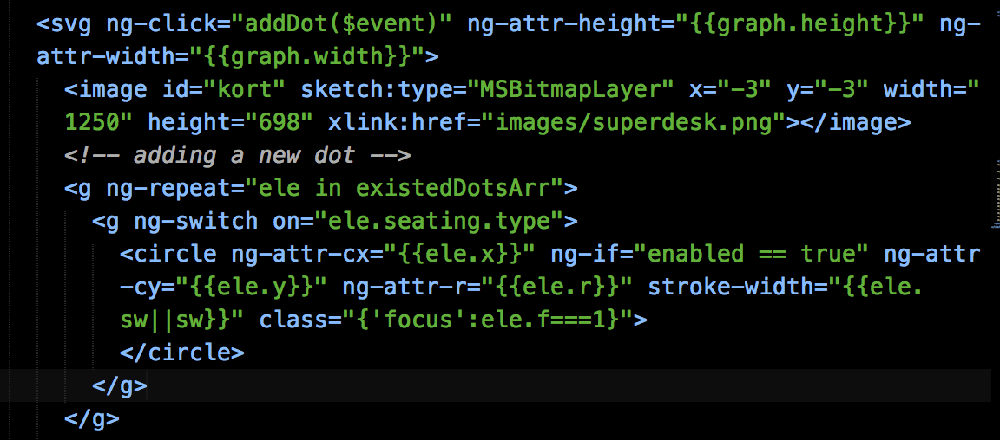
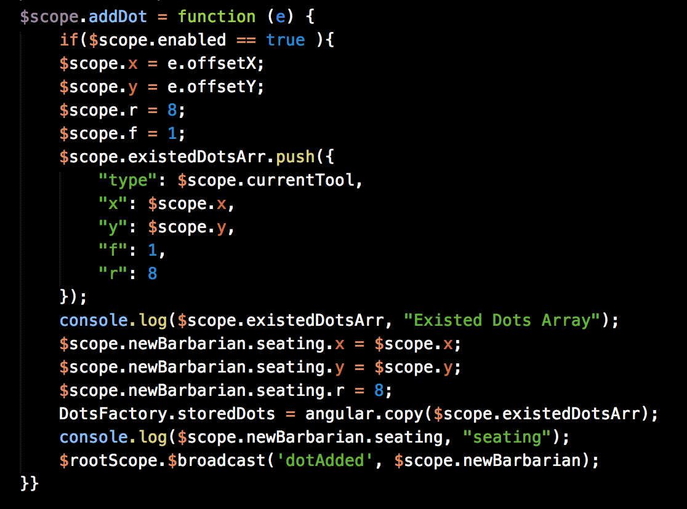

Our Superdesk is pretty famous

It can be pretty confusing for new Barbarians

Superdesk Seating Chart
Using MEAN Stack
http://192.168.32.148:3000/
Lesson Learned: Don't use too much $rootScope

Instead: Use Factory/Service


Lesson Learned: $http requests should be inFactory/Service


Conclusion: pretty much anything that is going to be shared needs to be put in service
SVG adding dots: Saving the dot in front-end and its coordinate in back-end


Need more functionality for:
Draggable functionality option in edit
Authentication requirement for certain user to add/edit
Its design
https://github.com/jeesunikim/superdesk